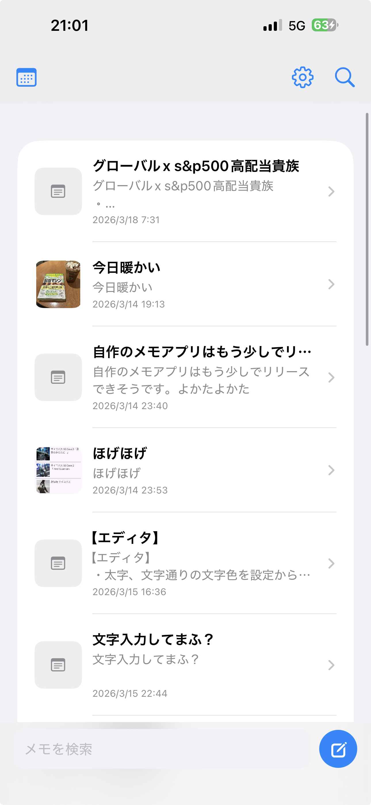

📝 iOSメモアプリ / iCloud同期対応
SynkNote
シンプルで使いやすい、iCloud同期対応メモアプリ
SynkNoteは、日々のメモやアイデアをすばやく記録し、 Appleデバイス間でスムーズに同期できるiOS向けメモアプリです。 シンプルな使い心地と見やすさを大切にして開発しています。
📌 アプリ概要
SynkNoteはシンプルで使いやすいiOS用メモアプリです。 メモの作成・編集・検索に対応し、画像付きメモも扱えます。
iCloudを利用することで、iPhoneやiPadなど複数のAppleデバイス間で メモを同期でき、いつでもどこでも同じ情報にアクセスできます。

💡 名前の由来
アプリ名に込めた意味です。
SynkNoteは「Sync（同期）」と「Link（つながり）」のイメージをもとにした名前です。 デバイス間でメモを同期し、ユーザーの情報やアイデアをどこからでも自然につなげられる アプリにしたい、という思いを込めています。
✨ 主な機能
SynkNoteで使える主な機能を紹介します。